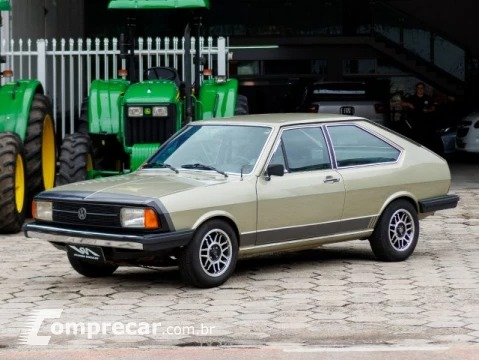

Passat LS Village
O Passat LS Village foi uma versão especial do Volkswagen Passat fabricada no Brasil na década de 1980. O carro era conhecido pelo seu design arrojado e luxuoso, e foi produzido entre 1983 e 1984.
O Passat LS Village tinha um motor de quatro cilindros em linha, com 1,5 litros de capacidade e 80 cavalos de potência. Ele vinha equipado com uma transmissão manual de quatro velocidades e apresentava um alto nível de acabamento e equipamentos, como ar condicionado, direção hidráulica, vidros elétricos, travas elétricas, rádio AM/FM, bancos revestidos em tecido aveludado e painel de instrumentos completo.
O design do Passat LS Village era bastante distintivo, com uma carroceria alongada e faróis retangulares integrados a uma grade frontal com um friso cromado. As laterais do carro tinham faixas decorativas e o emblema "LS Village" gravado nas laterais traseiras.
O Passat LS Village foi produzido em edição limitada, tornando-se um carro raro e muito valorizado por colecionadores. O design único e luxuoso, bem como o alto nível de equipamentos, tornam o Passat LS Village um modelo muito desejado pelos entusiastas de carros antigos no Brasil.